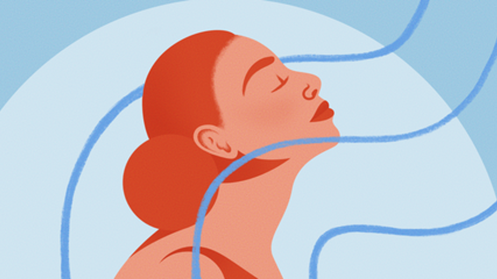

Taller de Meditación
1. Prepara el espacio
Busca un lugar tranquilo: Escoge un sitio donde no haya distracciones ni ruidos molestos. Crea un ambiente relajante con luz tenue o música suave.

2. Adopta una postura confortable
Siéntate de forma cómoda, mantén una postura erguida y relaja tu cuerpo para favorecer la concentración.

3. Establece un propósito
Define tu objetivo: relajación, liberar estrés o mejorar la concentración. Selecciona una técnica adecuada.

4. Concéntrate en tu respiración
Inhala lentamente por la nariz y exhala por la boca para calmarte. Observa tu respiración natural.
5. Dirige tu atención
Fija tu enfoque en un punto, un mantra o una sensación corporal. Si te distraes, regresa al enfoque inicial.
6. Mantente en el presente
Acepta sin juzgar las emociones o pensamientos que surjan. Practica la paciencia y vuelve al momento presente con calma.
7. Cierra la meditación
Antes de levantarte, agradece el momento y realiza estiramientos suaves para activar tu cuerpo.